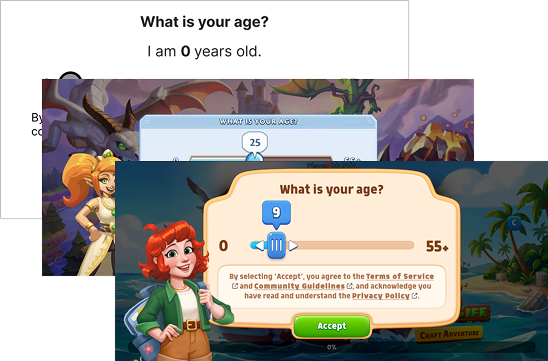
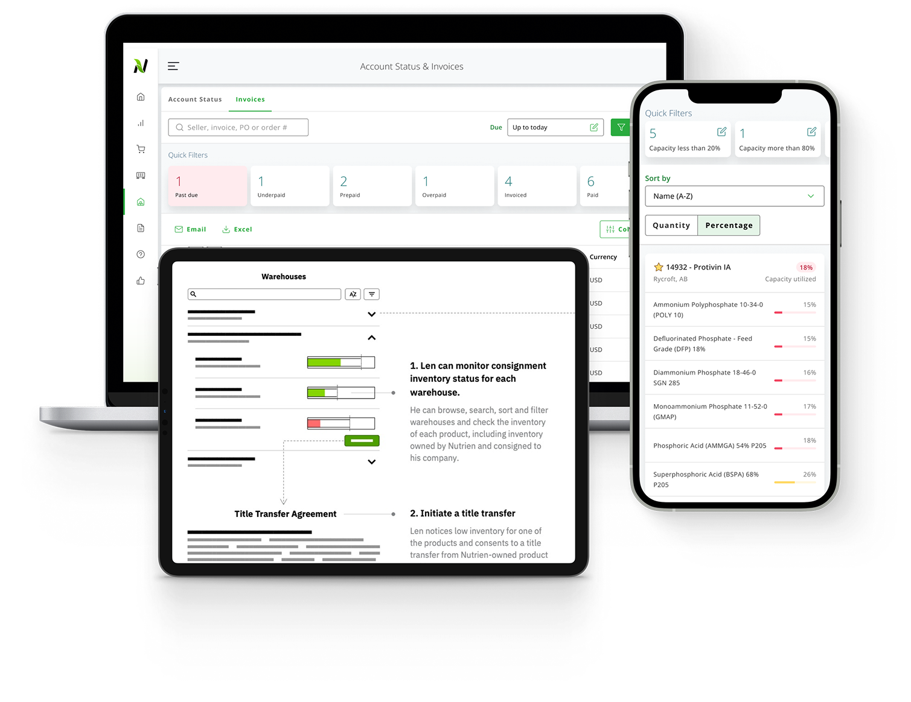

A Product Design Leader building high-autonomy teams using a coaching-first leadership style
Backed by a Computer Science foundation, 10+ years shipping B2B platforms across global markets, and 6+ years building high-autonomy design teams that turn complex regulatory workflows into measurable business growth.
Some fun facts about me:
Calgary is my current home, but I lived in Montreal and travelled to 18+ countries!
I make junk journals by repurposing stickers and branded paper goods
Currently Staff Product Designer & Design Manager @ Fortis Games
I lead platform product design, design operations, and people management.
I also run the Always Be Creative community and coach neurodivergent creatives in tech.
My leadership style
Great products come from healthy teams: I lead with empathy, coach through radical candor, and focus relentlessly on business impact.
Products shaped by a leadership style with purpose, people and process:
Scaling Global Compliance SDKs & Accelerating Platform Delivery
Shipped localized compliance tools across NA, EU, APAC, and LATAM while cutting release cycles from 4 months down to 1–2 months.
- 4mo → 1–2 months delivery cycle reduction
- 4 global jurisdictions localized (GDPR, Age Assurance, ECEA)
- Unblocked 3+ game launches, reducing legal bottlenecks
- Coached Intermediate Designer to senior-level autonomy

Modernizing an Enterprise B2B Platform with a 3-Year Strategic Vision
Co-led product strategy, design system, feature design, 3-year digital transformation roadmap, and established a unified UX operating model within a cross-functional triad.
- 3-year transformation roadmap secured executive investment
- Unified UX operating model aligning 3 external vendor teams
- Scalable enterprise design system, information architecture and high level wireframes
- Scalable design system & foundational information architecture
- Product triad leadership designing 5 core features

Kind words from collaborators
Carrie excels as a mentor, guiding junior designers with both technical advice and support, helping them grow professionally. Her combination of creativity, leadership, and organizational skills makes her an asset to any team.
Carrie [is] one of the most reliable and respected members of the team. Carrie's leadership shows her ability to guide the team and cross-functional alignment with maturity and empathy.
I would not be the designer that I am today, if it weren't for Carrie. She inspires others with her natural leadership and sense of curiosity.
Carrie was always ready to provide feedback and guidance, as well as being on-top of deliverables.
Carrie is an amazing and inspiring leader in design. Carrie's ability to see the whole project from concept to completion and the way she responded to competing needs turned the project into a stress-free collaborative process.
Carrie does an awesome job at creating an inclusive environment, ideating new initiatives to evolve our practice, and giving kudos/appreciation to others. She's definitely that person on the team that makes everyone feel valued, heard, and included.
Carrie is an amazing teacher. Carrie's enthusiasm, smile, and humor was super motivating. She made projects very fun to work on, and it never felt like a burden.
I got to know Carrie as a super transparent, insightful, and empathetic mentor. She listens carefully to my needs before she unreservedly provides actionable, insightful feedback and advices. I walk away from our session with clarity on goals and plans.
I hired Carrie to deliver a pitch workshop for my business accelerator program. The participants were highly engaged and expressed a significantly higher degree of confidence in their ability to pitch after the session.
During the development of my presentation on Leveraging LinkedIn, Carrie was an outstanding sounding board, offering great feedback, creative ideas, and perspective that genuinely strengthened my thinking and the final result.
My experience
Staff Product Designer & Design Manager
Leading platform product design, design operations, and people management across global compliance SDKs, internal developer tools, web platforms, and mobile game ecosystems globally.
Founder, Facilitator & Principal Experience Design Consultant
Helping clients streamline design operations, product strategy, corporate event experiences, and workshops on pitching and burnout recovery through analog play.
Senior Product Designer
Trained junior to senior designers on user interview facilitation, usability testing, and journey map design while launching credit card management for 680k+ users across web, iOS, and Android.
Senior Product Designer
Designed EU-compliant user flows, generating a projected 3.9M+ in expansion revenue and led the end-to-end onboarding redesign, driving an estimated 2.5M+ in annual revenue.
Senior Product Designer
Shaped product vision and customer insights for an enterprise sustainability SaaS platform by leading qualitative user research and product discovery, directly supporting product positioning that contributed to a successful acquisition by Nasdaq.
Customer Experience Design Consultant
Led an internal marketing design team of 10 junior designers. Built a Canada-wide community for 20 CXD consultants. Taught visual design workshops to 100+ IBMers, earning a 4.8/5 rating.